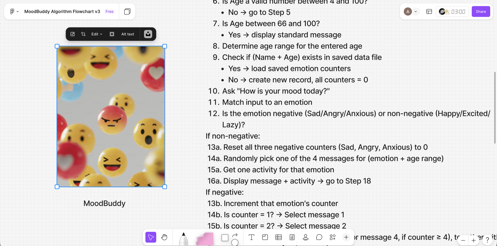

figma_1/MoodBuddy_Algorithm_Flowchart_Figma.pdf; screenshots of the live file in figma_1/screenshots/
(updated November 24, 2026).| Rubric criterion | Where it is | How it is met |
|---|---|---|
| Frames | 1. Frames | Three named frame sections group the flowchart: "Name and age intake", "User record", "Mood check-in loop" |
| Images | 2. Images | An emoji photo placed on the board with Figma's Unsplash plugin |
| Styling | 3. Styling | Colors by shape type, red and green arrows, text styles, standard flowchart shapes |
| Components | 4. Components | The photo and the "MoodBuddy" text grouped into one "MoodBuddy logo" object |
The flowchart is organized into three named frame sections, one for each part of the program, so each part can be moved, resized and read as a unit:
| Frame | What it contains |
|---|---|
| Name and age intake | Start, welcome message, name prompt and check, age prompt and checks, age-range mapping |
| User record | "Name and age found in saved file?" decision: load saved counters or create a new record |
| Mood check-in loop | Mood question, negative / non-negative branches, counters and warning, save, continue or quit, end |

I added an image to the design using Figma's built-in Unsplash plugin (Resources → Plugins → Unsplash), which places free-to-use Unsplash photos straight onto the canvas. I chose a photo of emoji faces (happy, angry, surprised, laughing and heart emoji) because MoodBuddy is about naming moods, then resized it and placed it next to the algorithm as the MoodBuddy logo.

| Styling element | How it is used |
|---|---|
| Colors by shape type | Green parallelograms for input and output (prompts, messages); blue diamonds for decisions; beige rectangles for process steps; orange, red and light-green boxes for counters, warnings and resets; a purple diamond for the continue-or-quit choice |
| Arrow colors | Green arrows for "Yes" paths and red arrows for "No" paths, so each decision can be followed at a glance |
| Shapes | Standard flowchart shapes: rounded terminators (Start / End program), parallelograms, rectangles and diamonds |
| Text and fonts | Large title "MoodBuddy Algorithm" and "Flowchart" headings, a numbered list for the 22 algorithm steps with indented Yes/No bullets, small labels inside shapes and on arrows, and the "MoodBuddy" caption under the logo |
The rubric allows a component made from "a selection of layers or a grouping of objects". I selected the emoji photo and the "MoodBuddy" text (click, then Shift + click) and grouped them with Cmd + G. They now act as one reusable MoodBuddy logo object: a single selection box surrounds both, and they move, resize and copy together.
| Part | Element |
|---|---|
| Layer 1 | Emoji photo (image, from Unsplash) |
| Layer 2 | "MoodBuddy" text label |
| Result | One grouped object, the MoodBuddy logo (Figure 2: one blue selection box around the photo and the text) |
Homedestinyguru.png: an earlier Figma flowchart practice exercise (Home Destiny Guru: log in, check location and
weather, then suggest staying home or going to work).